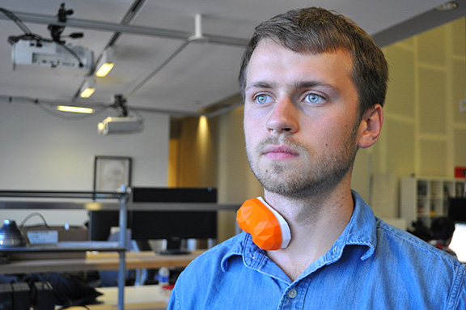
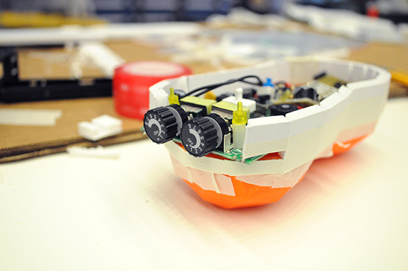
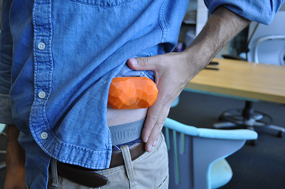
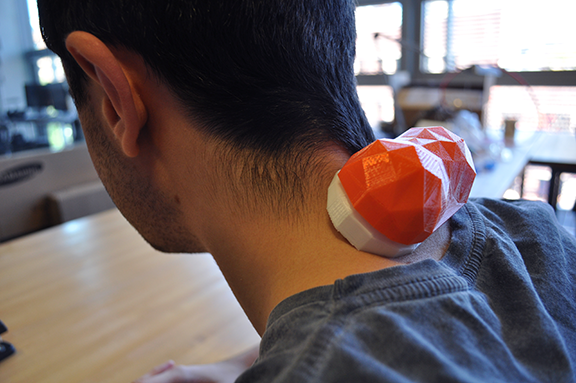
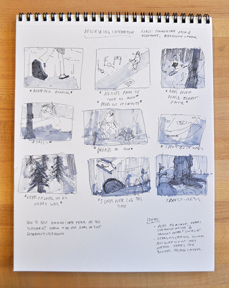

human-radiation interaction
interaction design, product design, speculative design
Design a way to give humans a physical, personal understanding of the radiation they are exposed to.

A collaborative Project with Dr. Munehiko Sato at the MIT Media Lab. Harmful radiation is a scary thing because it is impossible to understand with ones senses. A cut or bruise is painful, but not frightening because after it happens, it is easy to understand. With radiaiton, you have to trust what someone else tells you to feel, whether it be the news or

Our intervention to this problem is in the form of a wearable device that lightly shocks an individual when they are exposed to harmful radiation. By making the interaction a physical one, we enable the person to decide for themselves how they feel about radiation based on personal, physical experiences. The above pictures are of the "works-like model".


The above photos are from human factors testing done on the "looks-like" model.
